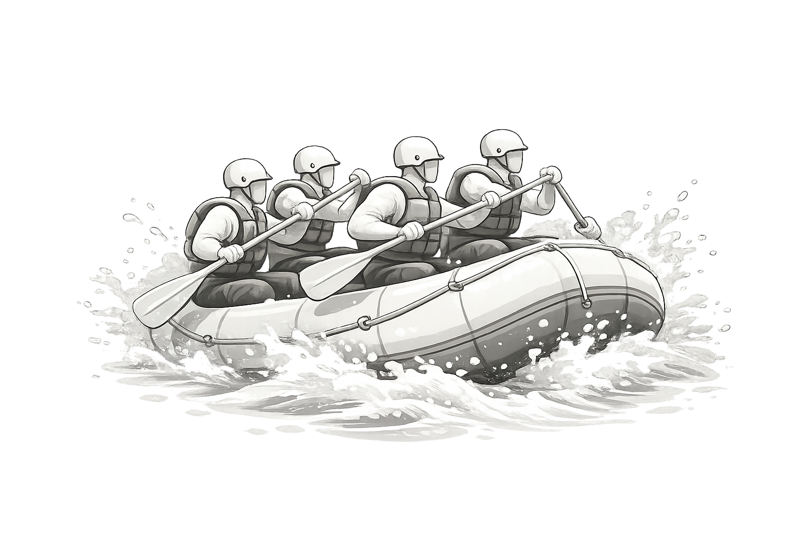

WWR Project
The WWR project is a white water rafting website that I created to practice building multi-page websites. Through this project, I learned how to design page layouts, use color schemes, organize navigation, and create a site that feels both fun and professional.
View WWR